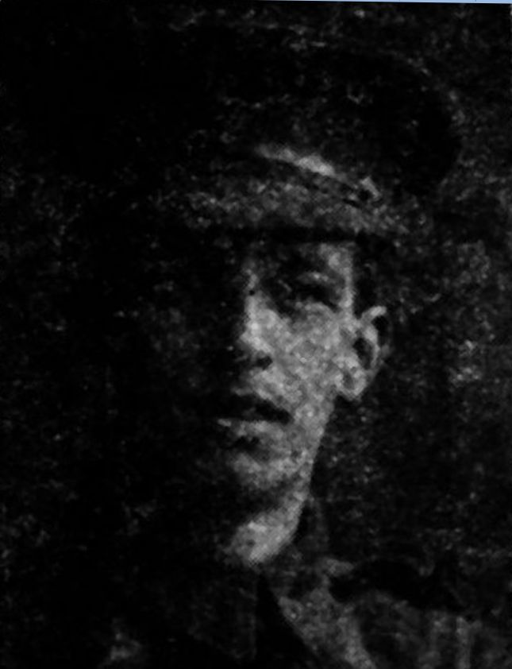
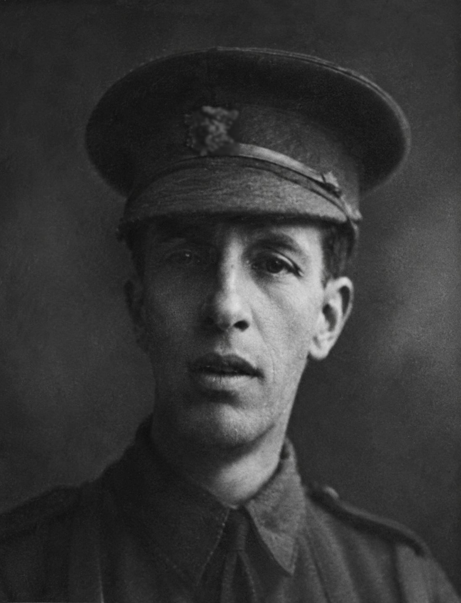

Arthur Harry Wolseley Beatty


Arthur Beatty was born at St James' Park, London in 1888 and was the son of Dr Joseph Beatty and Isabella Beatty. By 1911 he was living with his family in Harrow-on-the-Hill and working as an insurance agent. He was also active in the sporting and social life of the local community.
Civilian Life - Arthur's school days at John Lyon School formed part of his early life in Harrow, and his name is recorded on the school's First World War memorials. Beyond school, he took part in a range of sporting activities. He competed at local athletic meetings as a sprinter and hurdler, and contemporary reports described him as a successful jumper and an accomplished athlete.
Arthur wrote poetry. In December 1907, the Harrow Observer published one of his poems:
style="text-align: center;>MY FIRST HOCKEY MATCH
Military Life - When the First World War began, Arthur was serving as a member of the local Territorial Force. He immediately joined the Royal Engineers and served in France in the ranks. In early 1917 he received a commission and became a Second Lieutenant in the Royal Engineers. Contemporary newspaper reports record that he subsequently returned to France.
The Royal Engineers had been working underground since October 1916, constructing tunnels for the troops in preparation for the Battle of Arras in 1917.
Beneath Arras itself there is a vast network of caverns called the boves, consisting of underground quarries and sewage tunnels. The engineers came up with a plan to add new tunnels to this network so that troops could arrive at the battlefield in secrecy and in safety. The size of the excavation was immense. In one sector alone four Tunnel Companies of 500 men each worked around the clock in 18-hour shifts for two months.
After returning to the Western Front, it is likely Arthur engaged in this operation when was badly wounded in the face and shoulder by enemy fire. One contemporary report describes the weapon as a trench mortar. He was brought back to England and treated at military hospitals in Highgate and Portland Place. His condition initially appeared to improve, but he subsequently died from his wounds at the military hospital in Highgate on 30 July 1917. He was 23 years old.
Arthur was buried at Christ Church Churchyard, Chorleywood, on 3 August 1917. His funeral was attended by members of his family, including his sister Hilda and his brother Sidney, who was serving with the Australian Forces. Arthur James Edmund Bates's life therefore divided between his civilian education and family life in Chorleywood and his military service with the Royal Engineers. He began the war as a Territorial, served in France in the ranks, and later returned as a commissioned officer. Given the information we have available it is likely that Arthur James Edmund Bates was entitled to the Victory Medal, also called the Inter Allied Victory Medal. This medal was awarded to all who received the 1914 Star or 1914-15 Star and, with certain exceptions, to those who received the British War Medal. It was never awarded alone. These three medals were sometimes irreverently referred to as Pip, Squeak and Wilfred. Eligibility for this award consisted of having been mobilised, fighting, having served in any of the theatres of operations, or at sea, between midnight 4th/5th August, 1914, and midnight, 11th/12th November, 1918. Women who served in any of the various military organisations in a theatre of operations were also eligible. It is very possible that Arthur James Edmund Bates was entitled to the British War Medal for service in World War One.
This British Empire campaign medal was issued for services between 5th August 1914 and 11th November 1918. The medal was automatically awarded in the event of death on active service before the completion of this period.